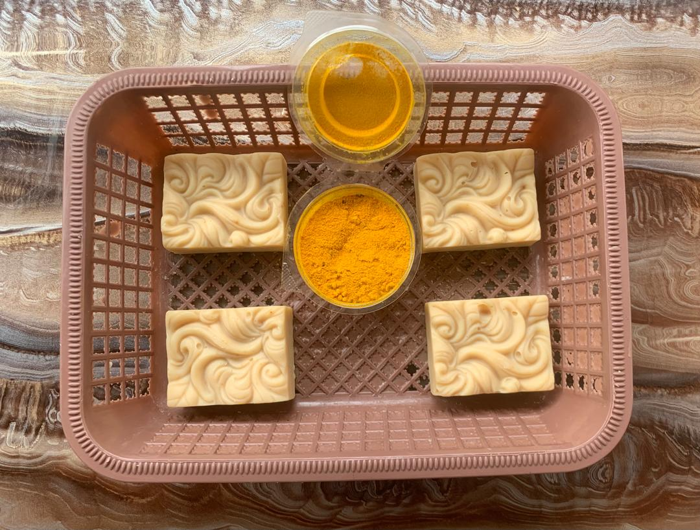

Éclat De Curcuma
Soin douceur
Découvrez sa composition
La douceur au naturel
Éclat De Curcuma associe des ingrédients d'origine végétale pour accompagner votre routine de soin et laisser la peau douce.
- Huile d’arachide : aide à assouplir la peau et à préserver son confort.
- Beurre de karité : nourrit la peau, aide à maintenir son hydratation et à réduire les sensations de sécheresse.
- Poudre de curcuma : aide à protéger la peau et contribue à lui donner un aspect plus lumineux et éclatant.